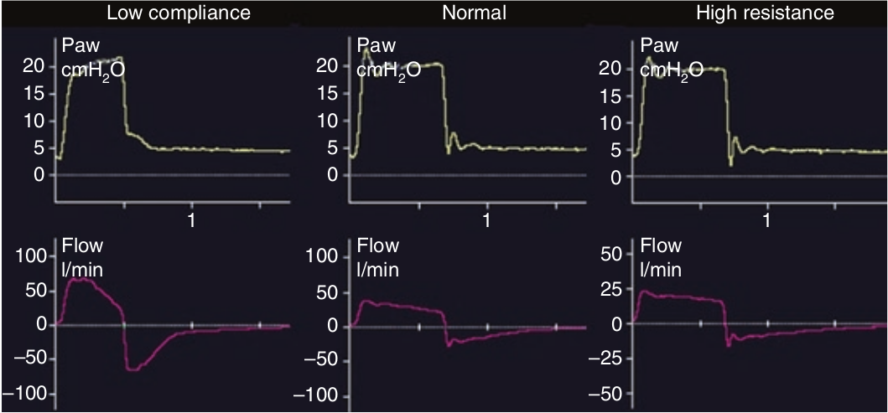

پس از اوج اولیه، شدت جریان دمی در صورتی که تلاش فعال دمی بیمار ادامه نداشته باشد، شذت جریان دمی با یک الگوی نمائی شروع به افت میکند. الگوی این افت نمائی بستگی به ثابت زمانی دمی بیمار (در واقع یعنی مکانیک تنفسی وی) دارد. اگر کمپلیانس کم باشد، فلو سریعا افت می کند و زمان دم کوتاه خواهد بود. برعکس اگر مقاومت زیاد باشد، افت شدت جریان آهسته تر خواهد بود و زمان دم طولانی تر میشود.

الگوی شدت جریان دمی در حمایت فشاری به کدام عامل زیر بستگی ندارد؟
۱ - مقاومت
۲ - فشار دمی تنظیم شده
۳ - کمپلیانس
۴ - اتساع مفرط دینامیک
۵ - تلاش بیمار